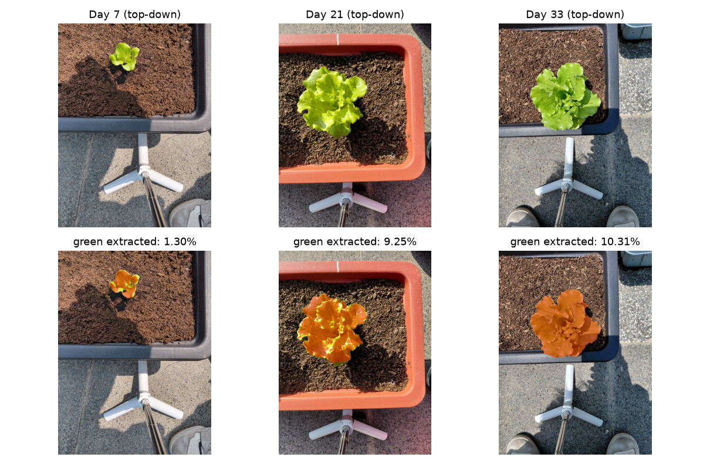
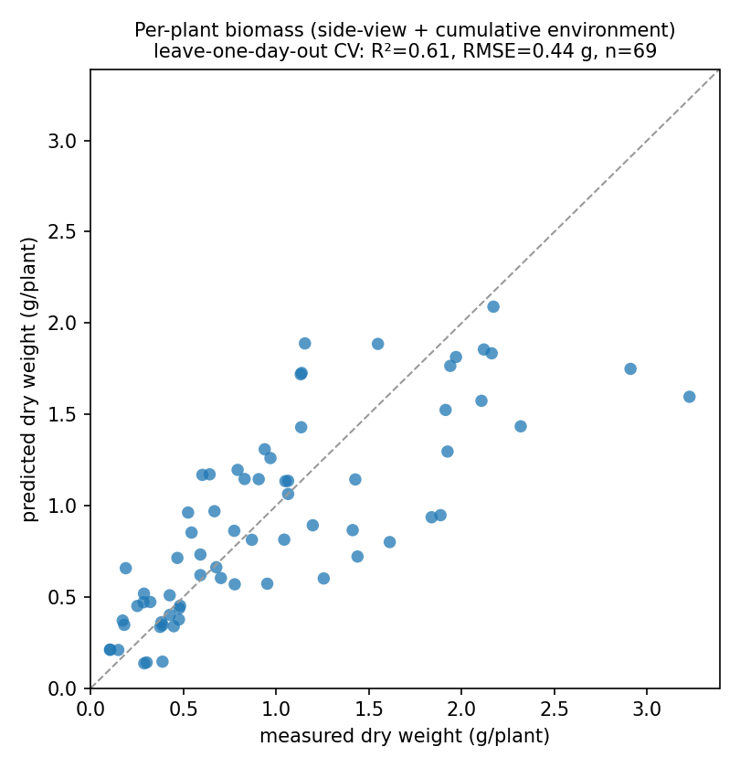

用一張照片，低成本、非破壞地估算一株植物含多少碳。
傳統取得一株生物量要破壞性採收＋烘乾至恆重（約 2–3 天）再秤重，毀掉植株、無法規模化。固了碳的專案常因此驗不起，也拿不到碳權。
從低成本影像擷取結構特徵（冠層面積、株高、冠層密度）＋環境時序，AI 估每株乾重，再 × 0.47 得碳量。少量烘乾乾重校正，輸出帶信心區間，不確定才送驗。
自種萵苣 569 張影像、其中 69 株有單顆乾重。側拍結構＋累積環境，留一日交叉驗證 R²≈0.61、RMSE≈0.44 g。實測，非模擬。
LeafCarbon 做的是量測（MRV），不是碳權。把這兩件事分清楚，定位就站得住：
| 觀念 | 常見誤解 | LeafCarbon 的講法 |
|---|---|---|
| 萵苣的角色 | 把萵苣當碳匯標的。草本本體吸的碳採收後幾週回大氣，淨庫存≈0，沒有方法學發碳權。 | 萵苣是快速驗證作物（約 35 天週期），用來把量測方法調準。我們不主張萵苣固碳。 |
| 我們提供什麼 | 賣碳權需要方法學、第三方認證、永久性，學生隊難以負擔，也無現成方法學。 | 提供量測：低成本、非破壞地量出固了多少。碳權由下游碳庫與專案開發商處理。 |
| 量到的能算碳權嗎 | 以為「量到碳」就等於「拿到碳權」。 | 量到的是可驗證的事實；能否換錢取決於下游的耐久封存，那是另一個環節。 |
一句話定位：量固碳量是技術，人人能做；可交易碳權是金融商品，需方法學認證。LeafCarbon 專注把全市場都缺的量測這一塊做到便宜又準，方法可遷移到森林、土壤、復育等持久碳庫。
標準化的低成本拍攝、一個 AI 估算模型，加上少量校正樣本。整套不需燃燒、不破壞植株。
| 元件 | 內容 |
|---|---|
| 標準化拍攝 | 固定高度拍攝（俯拍與側拍）、穩定打光，一個低成本、可複製的簡單裝置。 |
| AI 估算 | 影像 → 綠色冠層擷取 → 可解釋結構特徵（冠層面積、株高、冠層密度）＋環境時序（累積光照、生長度日）→ 隨機森林回歸每株乾重。 |
| 標準答案校正 | 少量樣品以烘乾乾重當校正錨點；碳 = 乾重 × 0.47。不需對每株做元素分析或燃燒。 |
| 信心分流 | 每筆估計帶信心區間，只有臨界樣品送驗——這讓輸出能當作 MRV 使用。 |
補充：我們也在這個資料規模下試過微調 CNN（凍結 ResNet 特徵），它沒有勝過可解釋的結構特徵＋環境（CNN R²≈0.46 對 0.61），主要是樣本少、且把影像縮成正方形會丟掉株高線索。深度感測（如手機 LiDAR）與更多作物列為日後提升準度的方向，不改變架構。
在自己種、逐日拍攝的萵苣資料集上，每株乾重模型用其中有單顆乾重的 69 株訓練與驗證，採最嚴格的留一日交叉驗證（預測沒看過的天）。


成本與速度：傳統取得一株生物量要破壞性採收＋烘乾約 2–3 天；LeafCarbon 從一張照片秒級估出，不毀植株，同一株之後還能再量。在專案層級，數位 MRV 文獻報導可把每農場查證成本降低約 70–90%。
植物乾物質的碳分率接近常數，約 47%（IPCC 2006 預設 0.47 tC/t；Ma et al. 2018 在 4,318 個物種落在 45.0–47.9%）。所以真正會變、值得量的是生物量。
| 要量的量 | 每株生物量（乾重）。碳 = 乾生物量 × 0.47。 |
| 影像負責 | 估生物量（大小 → 重量）。 |
| 校正負責 | 少量烘乾乾重校正「影像 → 生物量」這條關係；碳分率直接用 0.47 常數。 |
| 因此 | 不需要對每株做元素分析，量測門檻與成本大幅下降。 |
紅線提醒：草本本體吸的碳屬短循環，採收／被吃後幾週回大氣，淨庫存變化≈0。LeafCarbon 不主張萵苣固碳，而是把量測方法在萵苣上調準，再用到真實、持久的碳庫。
「用影像估生物量／碳」本身是成熟領域，我們沒有發明它。價值在於把它整合成一套能用、會自報信心、為固碳專案設計的低成本量測工具。
一個量測需要兩個部分：模型，以及用來對照的標準答案。兩邊各補一塊。
建議再補一位碳權方法學／土壤／農藝顧問掛名，補齊跨域缺口。
正式繳件為英文。完整中英文件見提案中樞的文件下載。
資訊工程與材料科學的跨領域學生團隊。資工負責影像機器學習模型、依信心度分流的邏輯與展示系統；材料負責烘乾乾重校正、影像標準化與量測流程。兩邊合起來，涵蓋量測需要的模型與標準答案。
生物碳移除的困難常在量測：量出固了多少，要量得準也量得起。傳統做法破壞性又昂貴，導致固了碳也驗不起。LeafCarbon 用低成本影像加少量乾重校正，把量測壓到「拍照、秒級、非破壞」。
建自有資料集（自種萵苣逐日拍攝＋乾重＋環境）→ 綠色冠層擷取算結構特徵 → 加入環境時序 → 隨機森林回歸每株乾重、留一日交叉驗證 → 少量烘乾乾重錨定標準答案，碳 = 乾重 × 0.47。
一套量測設置：標準化低成本拍攝＋AI 估算＋少量校正。由葉片結構估生物量已被驗證，路線風險低；我們加上的是會自報信心、為固碳專案設計的低成本非破壞量測工具。萵苣只是快速驗證作物。
自有資料每株乾重 R²≈0.61、RMSE≈0.44 g（留一日交叉驗證），實測。傳統採收＋烘乾約 2–3 天，本方法拍照秒級、可重複。專案層級數位 MRV 文獻報導降本約 70–90%。
問題（量碳太貴難規模化）→ 我們做了什麼（低成本影像量測設置）→ 實拍（拍攝架與烘乾乾重校正）→ AI demo（影像＋環境 → 生物量/碳＋信心度）→ 實測成績與成本對比。完整口白見 Demo 中英文稿對照表。